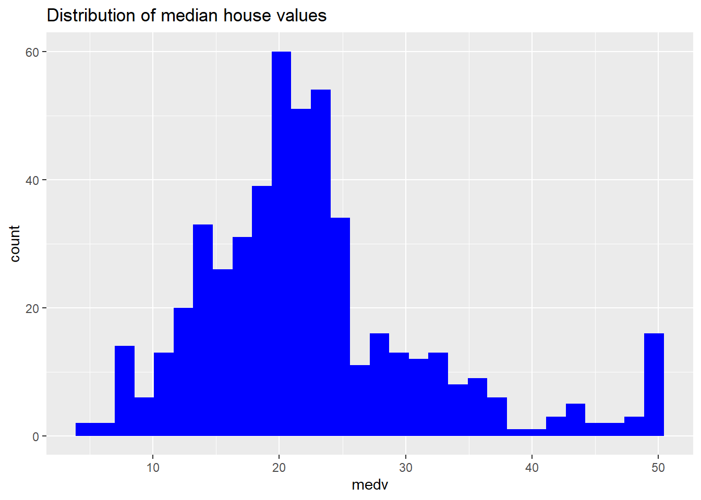

Hello! Today I will be performing Exploratory Data Analysis (EDA) on a sample dataset “Boston” to find the characteristics of this dataset containing housing information for housing located in the Boston area. After performing EDA, I will create a simple linear model and make a prediction on a sample record of the median house value of an area.
library(ISLR2)
Warning: package 'ISLR2' was built under R version 4.3.2
crim zn indus chas
Min. : 0.00632 Min. : 0.00 Min. : 0.46 Min. :0.00000
1st Qu.: 0.08205 1st Qu.: 0.00 1st Qu.: 5.19 1st Qu.:0.00000
Median : 0.25651 Median : 0.00 Median : 9.69 Median :0.00000
Mean : 3.61352 Mean : 11.36 Mean :11.14 Mean :0.06917
3rd Qu.: 3.67708 3rd Qu.: 12.50 3rd Qu.:18.10 3rd Qu.:0.00000
Max. :88.97620 Max. :100.00 Max. :27.74 Max. :1.00000
nox rm age dis
Min. :0.3850 Min. :3.561 Min. : 2.90 Min. : 1.130
1st Qu.:0.4490 1st Qu.:5.886 1st Qu.: 45.02 1st Qu.: 2.100
Median :0.5380 Median :6.208 Median : 77.50 Median : 3.207
Mean :0.5547 Mean :6.285 Mean : 68.57 Mean : 3.795
3rd Qu.:0.6240 3rd Qu.:6.623 3rd Qu.: 94.08 3rd Qu.: 5.188
Max. :0.8710 Max. :8.780 Max. :100.00 Max. :12.127
rad tax ptratio lstat
Min. : 1.000 Min. :187.0 Min. :12.60 Min. : 1.73
1st Qu.: 4.000 1st Qu.:279.0 1st Qu.:17.40 1st Qu.: 6.95
Median : 5.000 Median :330.0 Median :19.05 Median :11.36
Mean : 9.549 Mean :408.2 Mean :18.46 Mean :12.65
3rd Qu.:24.000 3rd Qu.:666.0 3rd Qu.:20.20 3rd Qu.:16.95
Max. :24.000 Max. :711.0 Max. :22.00 Max. :37.97
medv
Min. : 5.00
1st Qu.:17.02
Median :21.20
Mean :22.53
3rd Qu.:25.00
Max. :50.00
Let’s take a look at the distribution of our response variable, medv (median house values)
library(ggplot2)ggplot(data=mydata, aes(x=medv))+geom_histogram(fill="blue") +ggtitle("Distribution of median house values")
`stat_bin()` using `bins = 30`. Pick better value with `binwidth`.

Note that this is a unimodal distribution, with most home values hovering around 20.
Now let’s look at one of the possible predictors of median house values, crime rate, and how that relates to the median house values in a scatterplot
For this specific case, there appears to possibly be an inverse relationship between house value and crime, but it is hard to tell since so many of the houses have a crime value of 0 or near to 0. Interestingly, it appears that there are no instances of high median house value (>30) that have any crime value over 10.
To identify some other potential variables, let’s run a full correlation on the dataset with median house value. From there, we can pick out the top 5 or so features by absolute value correlation score to include in our linear prediction model.
The top 5 values are lstat, rm, ptratio, indus, and tax. Let’s now make a linear model predicting medv with these 5 values and see the summary of the model.
model <-lm(medv~lstat + rm + ptratio + indus + tax, data = mydata)summary(model)